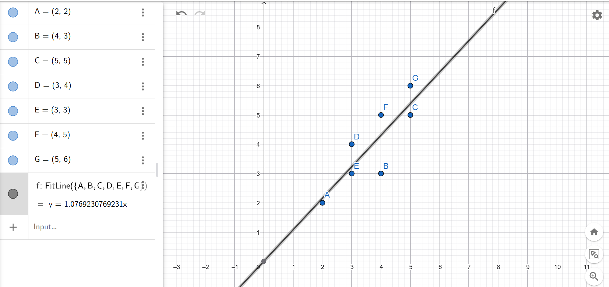

Regresi Linier#
Deskripsi Tugas#
Tugas ini membahas penerapan metode Regresi Linier untuk mengetahui hubungan antara variabel bebas x dan variabel terikat y.
Pada tugas ini, data divisualisasikan menggunakan GeoGebra Calculator. Selain itu, perhitungan koefisien regresi dilakukan menggunakan Python dengan dua cara, yaitu:
Menggunakan library
sklearn.Menggunakan perhitungan analitik dengan rumus matriks.
Hasil dari Python kemudian dibandingkan dengan hasil garis regresi yang diperoleh dari GeoGebra.
Data yang Digunakan#
Data yang digunakan berupa titik-titik koordinat sebagai berikut:
Titik |
x |
y |
|---|---|---|
A |
2 |
2 |
B |
4 |
3 |
C |
5 |
5 |
D |
3 |
4 |
E |
3 |
3 |
F |
4 |
5 |
G |
5 |
6 |
Visualisasi Menggunakan GeoGebra#
Pada GeoGebra Calculator, data dimasukkan dalam bentuk titik koordinat:
A = (2, 2)
B = (4, 3)
C = (5, 5)
D = (3, 4)
E = (3, 3)
F = (4, 5)
G = (5, 6)
Setelah semua titik dimasukkan, dibuat garis regresi linier menggunakan perintah:
FitLine({A, B, C, D, E, F, G})
Berdasarkan hasil dari GeoGebra, diperoleh persamaan garis regresi:
y = 1.0769230769231x
Artinya, garis regresi memiliki nilai kemiringan atau slope sebesar 1.0769230769231.

Konsep Regresi Linier#
Regresi linier sederhana memiliki bentuk umum:
y = β0 + β1x
Keterangan:
y = variabel terikat
x = variabel bebas
β0 = intercept atau konstanta
β1 = slope atau koefisien regresi
Pada data ini, hasil yang diperoleh adalah:
β0 = 0
β1 = 1.0769230769231
Sehingga persamaan regresi liniernya menjadi:
y = 0 + 1.0769230769231x
atau dapat disederhanakan menjadi:
y = 1.0769230769231x
Perhitungan Menggunakan Python Sklearn#
Perhitungan regresi linier dapat dilakukan menggunakan library sklearn pada Python.
import numpy as np
from sklearn.linear_model import LinearRegression
# Data
X = np.array([[2], [4], [5], [3], [3], [4], [5]])
Y = np.array([2, 3, 5, 4, 3, 5, 6])
# Membuat model regresi linier
model = LinearRegression()
# Melatih model
model.fit(X, Y)
# Mengambil nilai intercept dan slope
intercept = model.intercept_
slope = model.coef_[0]
print("Intercept / β0:", intercept)
print("Slope / β1:", slope)
print(f"Persamaan regresi: y = {intercept:.4f} + {slope:.4f}x")
Hasil output:
Intercept / β0: 0.0
Slope / β1: 1.0769230769230769
Persamaan regresi: y = 0.0000 + 1.0769x
Berdasarkan hasil tersebut, diperoleh:
β0 = 0
β1 = 1.0769230769231
Maka persamaan regresinya adalah:
y = 1.0769230769231x
Visualisasi Menggunakan Python#
Selain menggunakan GeoGebra, data dan garis regresi juga dapat divisualisasikan menggunakan Python.
import numpy as np
import matplotlib.pyplot as plt
from sklearn.linear_model import LinearRegression
# Data
x = np.array([2, 4, 5, 3, 3, 4, 5])
y = np.array([2, 3, 5, 4, 3, 5, 6])
X = x.reshape(-1, 1)
# Model regresi linier
model = LinearRegression()
model.fit(X, y)
# Prediksi nilai y
y_pred = model.predict(X)
# Label titik
labels = ["A", "B", "C", "D", "E", "F", "G"]
# Visualisasi
plt.figure(figsize=(8, 6))
plt.scatter(x, y, label="Data Asli", s=80)
plt.plot(x, y_pred, label="Garis Regresi", linewidth=2)
# Menampilkan label pada setiap titik
for i, label in enumerate(labels):
plt.text(x[i] + 0.05, y[i] + 0.05, label, fontsize=12)
plt.title("Visualisasi Regresi Linier")
plt.xlabel("x")
plt.ylabel("y")
plt.grid(True)
plt.legend()
plt.show()
Visualisasi tersebut menampilkan titik-titik data asli dan garis regresi linier yang diperoleh dari hasil perhitungan Python.
Perhitungan Analitik#
Selain menggunakan sklearn, koefisien regresi juga dapat dihitung secara analitik menggunakan rumus matriks:
β̂ = (XᵀX)⁻¹XᵀY
Keterangan:
β̂ = vektor koefisien regresi
X = matriks variabel input
Xᵀ = transpose dari matriks X
(XᵀX)⁻¹ = invers dari matriks XᵀX
Y = vektor nilai target
Karena model regresi linier memiliki bentuk:
y = β0 + β1x
maka matriks X perlu ditambahkan kolom angka 1 untuk mewakili intercept.
Matriks X dan Y#
Data nilai x adalah:
x = [2, 4, 5, 3, 3, 4, 5]
Data nilai y adalah:
y = [2, 3, 5, 4, 3, 5, 6]
Matriks X disusun menjadi:
X =
[1 2]
[1 4]
[1 5]
[1 3]
[1 3]
[1 4]
[1 5]
Matriks Y disusun menjadi:
Y =
[2]
[3]
[5]
[4]
[3]
[5]
[6]
Kolom pertama pada matriks X berisi angka 1 karena digunakan untuk menghitung nilai intercept β0.
Kode Perhitungan Analitik#
Berikut kode Python untuk menghitung koefisien regresi menggunakan rumus analitik:
import numpy as np
# Data
x = np.array([2, 4, 5, 3, 3, 4, 5])
y = np.array([2, 3, 5, 4, 3, 5, 6])
# Membuat matriks X dengan kolom 1 untuk intercept
X = np.column_stack((np.ones(len(x)), x))
# Membuat Y menjadi matriks kolom
Y = y.reshape(-1, 1)
# Menghitung beta menggunakan rumus analitik
beta = np.linalg.inv(X.T @ X) @ X.T @ Y
print("β0 / Intercept:", beta[0][0])
print("β1 / Slope:", beta[1][0])
print(f"Persamaan regresi: y = {beta[0][0]:.4f} + {beta[1][0]:.4f}x")
Hasil output:
β0 / Intercept: 0.0
β1 / Slope: 1.0769230769230769
Persamaan regresi: y = 0.0000 + 1.0769x
Hasil tersebut sama dengan hasil dari GeoGebra dan sklearn.
Perbandingan Hasil#
Berikut perbandingan hasil dari tiga metode:
Metode |
Persamaan Regresi |
|---|---|
GeoGebra Calculator |
y = 1.0769230769231x |
Python Sklearn |
y = 1.0769230769231x |
Perhitungan Analitik |
y = 1.0769230769231x |
Ketiga metode menghasilkan persamaan regresi yang sama.
Kesimpulan#
Berdasarkan hasil analisis, diperoleh persamaan regresi linier:
y = 1.0769230769231x
Hasil tersebut diperoleh dari tiga metode, yaitu:
GeoGebra Calculator.
Python menggunakan library
sklearn.Perhitungan analitik menggunakan rumus matriks.
Hasil dari ketiga metode sama, sehingga dapat disimpulkan bahwa hasil garis regresi pada GeoGebra sudah sesuai dengan hasil perhitungan Python dan perhitungan analitik.
Persamaan regresi tersebut menunjukkan bahwa setiap kenaikan nilai x sebesar 1 akan meningkatkan nilai prediksi y sebesar sekitar 1.0769.